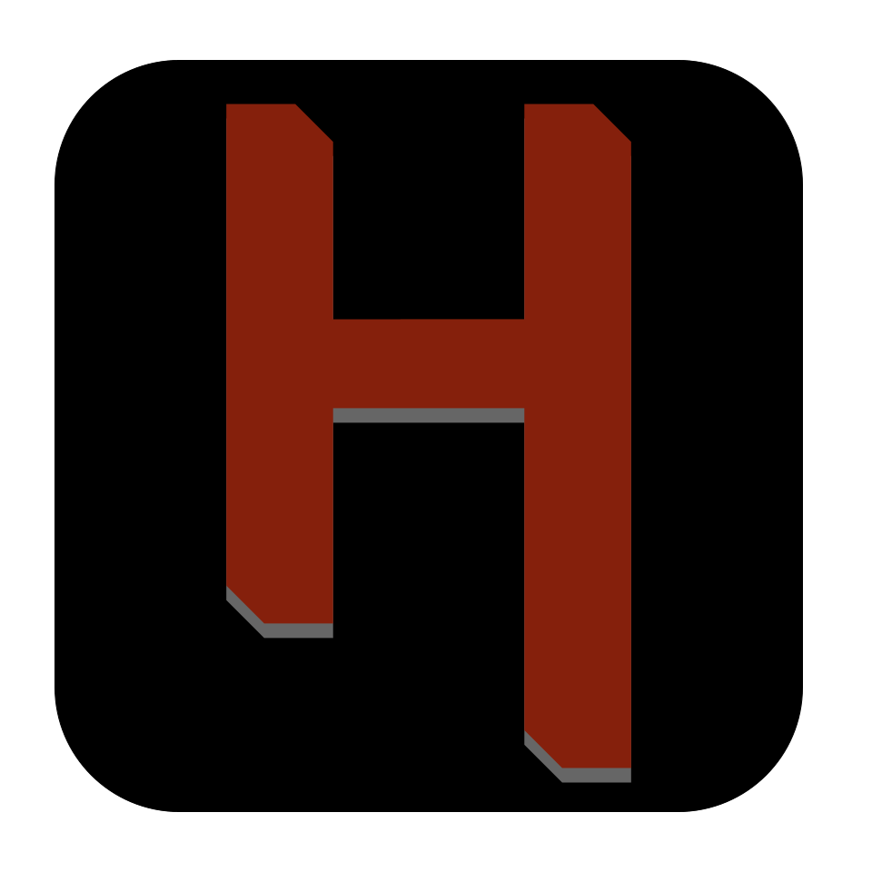

What is the Game About?
Hadal is an in development boomer shooter that puts players in the depths of the ocean, where they must navigate through treacherous waters and face off against terrifying sea creatures. Features stylized graphics and and fast paced gameplay.
The game features a variety of gameplay mechanics, including exploration, mobility, and shooter combat. Players will need to use their wits and skills to survive in this unforgiving environment.

